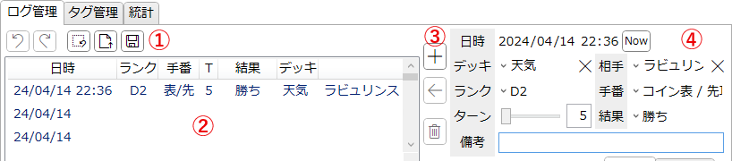
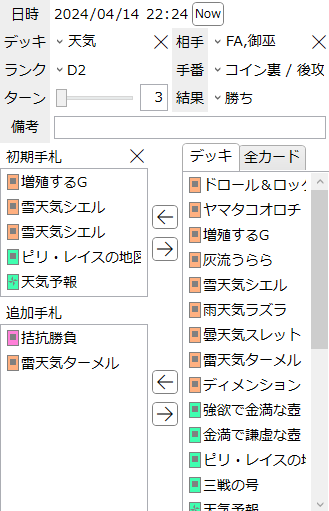
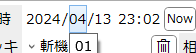
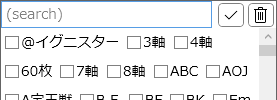

「ログ管理」タブ
『遊戯王OCG』(及び『Yu-Gi-Oh! TCG』)での対戦履歴データを管理するタブです。
基本的には『遊戯王マスターデュエル』での対戦記録に特化したUIとなっています。
このタブで設定した内容はアプリ設定に記憶され、次回以降の起動時に復元されます。
説明

-
エディットバー
- ログの編集に関する操作を行うボタン群です。
-
 : 最後に行った操作(ログの追加/編集/削除)を元に戻します。
: 最後に行った操作(ログの追加/編集/削除)を元に戻します。
-
 : 最後に元に戻した編集操作をやり直します。
: 最後に元に戻した編集操作をやり直します。
- 元に戻す以外の操作を一度でも行うとやり直しはできなくなります。
-
 : 全ての項目を削除してリストを空にします。
: 全ての項目を削除してリストを空にします。
-
 : .jsonファイルを読み込んで、その内容を反映します。
: .jsonファイルを読み込んで、その内容を反映します。
-
 : このログリストの内容を.jsonファイルとして保存します。
: このログリストの内容を.jsonファイルとして保存します。
-
ログリスト
- 対戦履歴の一覧です。
- 項目を選ぶとその内容が右の編集エリアに反映されます。
-
ヘッダー(「名前」などが書かれている部分)をクリックすると、それを基準として項目をソート(並べ替え)します。
- ソートを解除(ID順にソート)したい場合は「詳細」のヘッダーをクリックしてください。
-
項目の操作
-
 : 編集中のログ内容を新しくリストに追加し、その項目を選択します。
: 編集中のログ内容を新しくリストに追加し、その項目を選択します。
- この際「日時」は自動的に現在の時刻となるためご注意ください。
-
 : 編集中のログ内容を選択中の項目に反映します。
: 編集中のログ内容を選択中の項目に反映します。
- 「反映」せずに他のログを選んだ場合、編集中の内容は破棄されるのでご注意ください。
-
 : 選択されている項目を削除します。
: 選択されている項目を削除します。
-
-
編集エリア
- 対戦履歴の内容を編集する領域です。
- 詳細は下記ログ内容を参照してください。
ログ内容

-
日時: その対戦が行われた日時を分単位で指定します。
-
年、月、日、時、分のそれぞれがコンボボックスとなっており、クリックで選択候補を表示できます。

- マウスホイールを回すと各桁を1ずつ変更できます。
- 「Now」ボタンを押すと現在時刻を入力します。
-
年、月、日、時、分のそれぞれがコンボボックスとなっており、クリックで選択候補を表示できます。
- デッキ: 自分が使ったデッキの内容を、デッキタグから任意に選択します。
-
相手: 対戦相手のデッキの内容を、デッキタグから任意に選択します。
-
 を押すと、全てのタグを非選択状態にします。
を押すと、全てのタグを非選択状態にします。
-
クリックすると以下のようなポップアップが表示されます。

-
チェックボックスにチェックを入れることで、そのタグを追加します。
- マウスボタンを押したらそのままドラッグすることで、マウスが通過したボタンを一括で設定できます。
- 最初のクリックでチェックを入れた場合はドラッグで一括チェック
- 最初のクリックでチェックを外した場合はドラッグで一括解除
-
テキストボックスに何か入力すると、タグ管理で設定された「検索用文字列」がマッチするタグを絞り込みます。
- 半角英数及び記号のみ入力できます。
- テキストボックスに何か入力すると、「検索用文字列」にその文字列を含むタグがマッチします。
-
 を押すと、チェックされたタグのみを表示します。
を押すと、チェックされたタグのみを表示します。
-
を押すと、タグの絞り込みを解除します。
-
チェックボックスにチェックを入れることで、そのタグを追加します。
-
-
ランク/手番/ターン/結果: それぞれ適切に選択します。
- それぞれの情報は統計を取る際に検索条件として利用されます。
-
備考: その対戦に関する備考を任意に入力します。
- ここに入力された値は、この画面やログのリストで表示される以外には一切使われません。
-
初期手札/追加手札: デュエル開始時の手札と、それ以降に追加された手札をそれぞれ指定します。
- この内容は統計を取る際に利用されますが、特に設定しなくても対戦履歴の記録には支障ありません。
-
を押すと、左側の両方のリストを空にします。
- 左側のリスト(初期手札/追加手札)の項目を右クリックすると、その項目を削除します。
-
右側のリスト(デッキ/全カード)の項目を右クリックすると、そのカードを左のリストに追加します。
- 「初期手札」の内容が4個以下の場合は「初期手札」に追加されます。
- 「初期手札」の内容が5個以上の場合は「追加手札」に追加されます。
-
各項目は矢印ボタン(
 )及びドラッグ&ドロップによって移動することもできます。
)及びドラッグ&ドロップによって移動することもできます。
- 追加手札と書いてありますが、本質的にはランダム要素によって選ばれたカードを記録するためのリストであり、例えばランダムな墓地肥やしによって落ちたカードを含めてもよいでしょう。